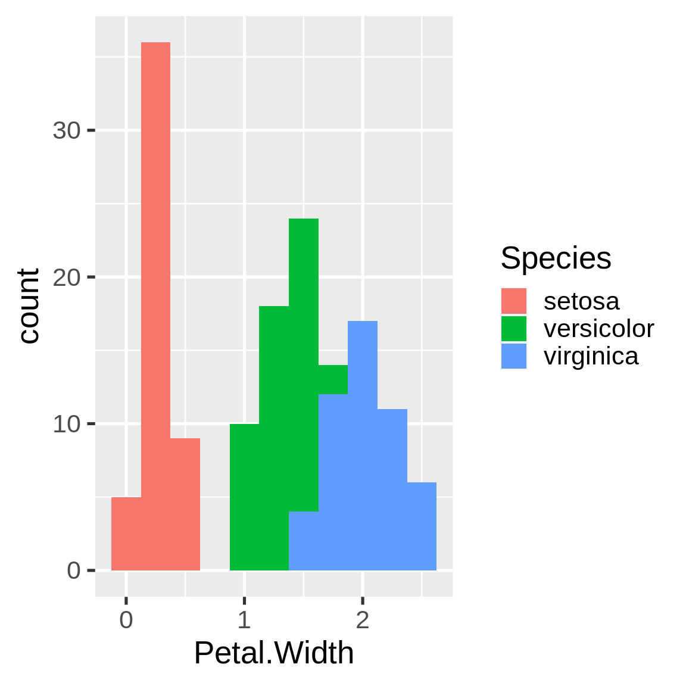
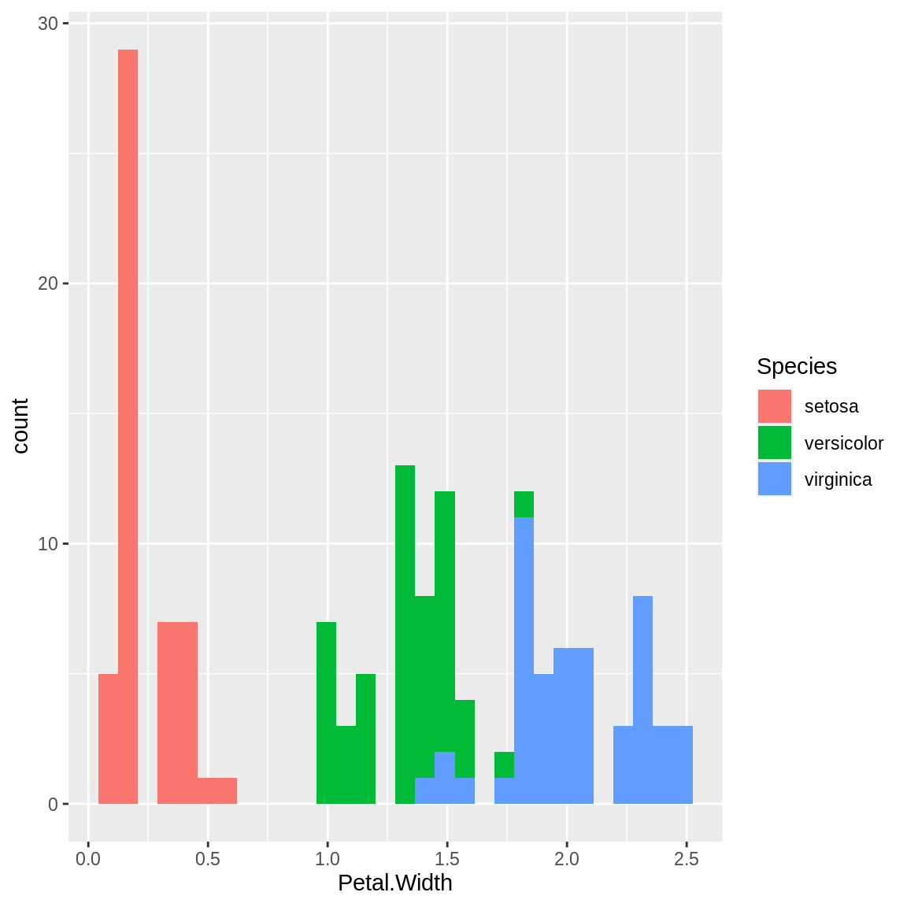
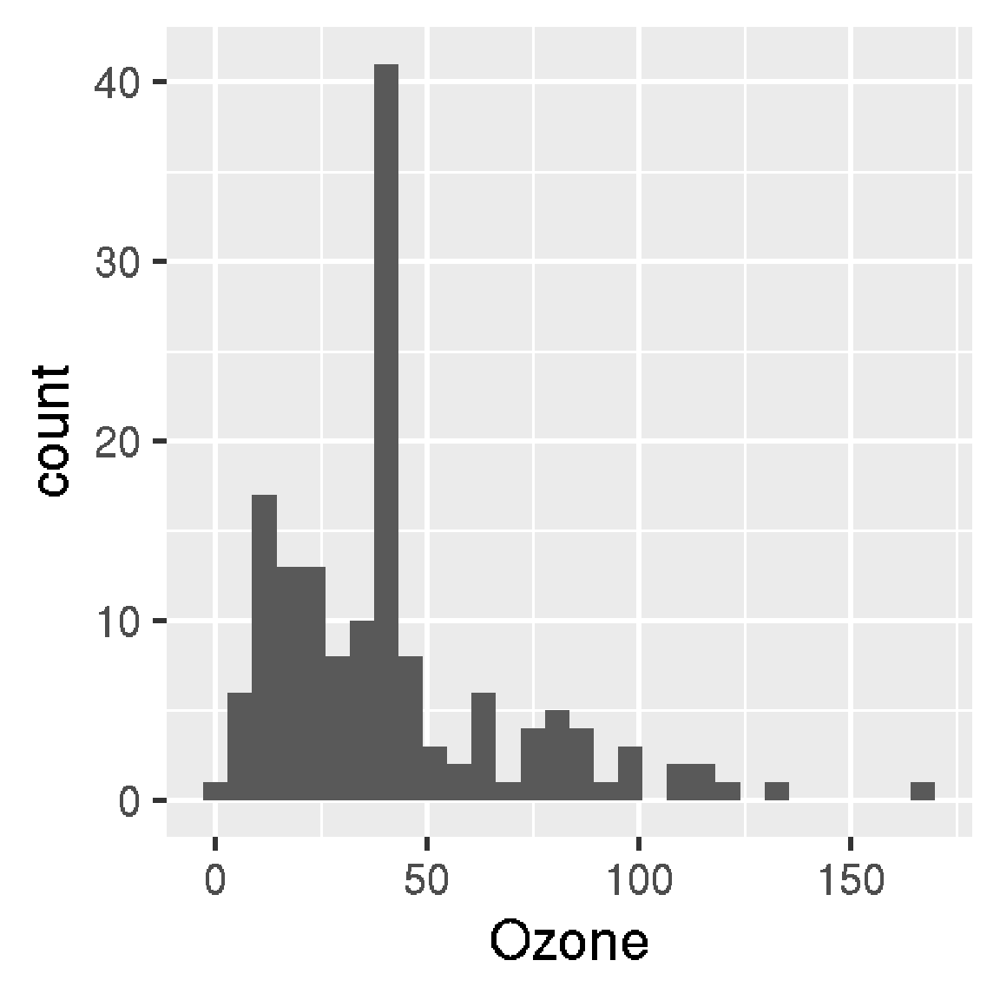

Chapter 3 Walkthrough
A typical data analysis workflow is a sequence of data transformations. Raw data becomes tidy data, then turns into fitted models, summaries, and reports. Other analyses are usually variations of this pattern, and drake can easily accommodate them.
3.1 Set the stage.
To set up a project, load your packages,
load your custom functions,
create_plot <- function(data) {
ggplot(data, aes(x = Petal.Width, fill = Species)) +
geom_histogram()
}check any supporting files (optional),
## Get the files with drake_example("main").
file.exists("raw_data.xlsx")
#> [1] TRUE
file.exists("report.Rmd")
#> [1] TRUEand plan what you are going to do.
plan <- drake_plan(
raw_data = readxl::read_excel(file_in("raw_data.xlsx")),
data = raw_data %>%
mutate(Species = forcats::fct_inorder(Species)),
hist = create_plot(data),
fit = lm(Sepal.Width ~ Petal.Width + Species, data),
report = rmarkdown::render(
knitr_in("report.Rmd"),
output_file = file_out("report.html"),
quiet = TRUE
)
)
plan
#> # A tibble: 5 x 2
#> target command
#> <chr> <expr>
#> 1 raw_data readxl::read_excel(file_in("raw_data.xlsx")) …
#> 2 data raw_data %>% mutate(Species = forcats::fct_inorder(Species)) …
#> 3 hist create_plot(data) …
#> 4 fit lm(Sepal.Width ~ Petal.Width + Species, data) …
#> 5 report rmarkdown::render(knitr_in("report.Rmd"), output_file = file_out("re…Optionally, visualize your workflow to make sure you set it up correctly. The graph is interactive, so you can click, drag, hover, zoom, and explore.
3.2 Make your results.
So far, we have just been setting the stage. Use make() to do the real work. Targets are built in the correct order regardless of the row order of plan.
Except for output files like report.html, your output is stored in a hidden .drake/ folder. Reading it back is easy.
readd(data) %>% # See also loadd().
head()
#> # A tibble: 6 x 5
#> Sepal.Length Sepal.Width Petal.Length Petal.Width Species
#> <dbl> <dbl> <dbl> <dbl> <fct>
#> 1 5.1 3.5 1.4 0.2 setosa
#> 2 4.9 3 1.4 0.2 setosa
#> 3 4.7 3.2 1.3 0.2 setosa
#> 4 4.6 3.1 1.5 0.2 setosa
#> 5 5 3.6 1.4 0.2 setosa
#> 6 5.4 3.9 1.7 0.4 setosaThe graph shows everything up to date.
3.3 Go back and fix things.
You may look back on your work and see room for improvement, but it’s all good! The whole point of drake is to help you go back and change things quickly and painlessly. For example, we forgot to give our histogram a bin width.

So let’s fix the plotting function.
create_plot <- function(data) {
ggplot(data, aes(x = Petal.Width, fill = Species)) +
geom_histogram(binwidth = 0.25) +
theme_gray(20)
}drake knows which results are affected.
The next make() just builds hist and report. No point in wasting time on the data or model.

3.4 History and provenance
As of version 7.5.2, drake tracks the history and provenance of your targets:
what you built, when you built it, how you built it, the arguments you
used in your function calls, and how to get the data back.
history <- drake_history(analyze = TRUE)
history
#> # A tibble: 7 x 10
#> target current built exists hash command seed runtime quiet output_file
#> <chr> <lgl> <chr> <lgl> <chr> <chr> <int> <dbl> <lgl> <chr>
#> 1 data TRUE 2020-… TRUE e580… "raw_dat… 1.29e9 0.002 NA <NA>
#> 2 fit TRUE 2020-… TRUE 66b5… "lm(Sepa… 1.11e9 0.00300 NA <NA>
#> 3 hist FALSE 2020-… TRUE 607e… "create_… 2.10e8 0.009 NA <NA>
#> 4 hist TRUE 2020-… TRUE d447… "create_… 2.10e8 0.00500 NA <NA>
#> 5 raw_da… TRUE 2020-… TRUE 6317… "readxl:… 1.20e9 0.00900 NA <NA>
#> 6 report TRUE 2020-… TRUE 99c4… "rmarkdo… 1.30e9 0.631 TRUE report.html
#> 7 report TRUE 2020-… TRUE 99c4… "rmarkdo… 1.30e9 0.505 TRUE report.htmlRemarks:
- The
quietcolumn appears above because one of thedrake_plan()commands hasknit(quiet = TRUE). - The
hashcolumn identifies all the previous the versions of your targets. As long asexistsisTRUE, you can recover old data. - Advanced: if you use
make(cache_log_file = TRUE)and put the cache log file under version control, you can match the hashes fromdrake_history()with thegitcommit history of your code.
Let’s use the history to recover the oldest histogram.
hash <- history %>%
filter(target == "hist") %>%
pull(hash) %>%
head(n = 1)
cache <- drake_cache()
cache$get_value(hash)
#> `stat_bin()` using `bins = 30`. Pick better value with `binwidth`.
3.5 Reproducible data recovery and renaming
Remember how we made that change to our histogram? What if we want to change it back? If we revert create_plot(), make(plan, recover = TRUE) restores the original plot.
create_plot <- function(data) {
ggplot(data, aes(x = Petal.Width, fill = Species)) +
geom_histogram()
}
# The report still needs to run in order to restore report.html.
make(plan, recover = TRUE)
#> unload targets from environment:
#> hist
#> recover hist
#> target report
readd(hist) # old histogram
#> `stat_bin()` using `bins = 30`. Pick better value with `binwidth`.
drake’s data recovery feature is another way to avoid rerunning commands. It is useful if:
- You want to revert to your old code, maybe with
git reset. - You accidentally
clean()ed a target and you want to get it back. - You want to rename an expensive target.
In version 7.5.2 and above, make(recover = TRUE) can salvage the values of old targets. Before building a target, drake checks if you have ever built something else with the same command, dependencies, seed, etc. that you have right now. If appropriate, drake assigns the old value to the new target instead of rerunning the command.
Caveats:
- This feature is still experimental.
- Recovery may not be a good idea if your external dependencies have changed a lot over time (R version, package environment, etc.).
3.5.1 Undoing clean()
# Is the data really gone?
clean() # garbage_collection = FALSE
# Nope!
make(plan, recover = TRUE) # The report still builds since report.md is gone.
#> recover raw_data
#> recover data
#> recover fit
#> recover hist
#> recover report
# When was the raw data *really* first built?
diagnose(raw_data)$date
#> [1] "2020-02-06 01:37:26.603567 +0000 GMT"3.5.2 Renaming
You can use recovery to rename a target. The trick is to supply the random number generator seed that drake used with the old target name. Also, renaming a target unavoidably invalidates downstream targets.
# Get the old seed.
old_seed <- diagnose(data)$seed
# Now rename the data and supply the old seed.
plan <- drake_plan(
raw_data = readxl::read_excel(file_in("raw_data.xlsx")),
# Previously just named "data".
iris_data = target(
raw_data %>%
mutate(Species = forcats::fct_inorder(Species)),
seed = !!old_seed
),
# `iris_data` will be recovered from `data`,
# but `hist` and `fit` have changed commands,
# so they will build from scratch.
hist = create_plot(iris_data),
fit = lm(Sepal.Width ~ Petal.Width + Species, iris_data),
report = rmarkdown::render(
knitr_in("report.Rmd"),
output_file = file_out("report.html"),
quiet = TRUE
)
)
make(plan, recover = TRUE)
#> recover iris_data
#> target fit
#> target hist
#> target report3.6 Try the code yourself!
Use drake_example("main") to download the code files for this example.
3.7 Thanks
Thanks to Kirill Müller for originally providing this example.